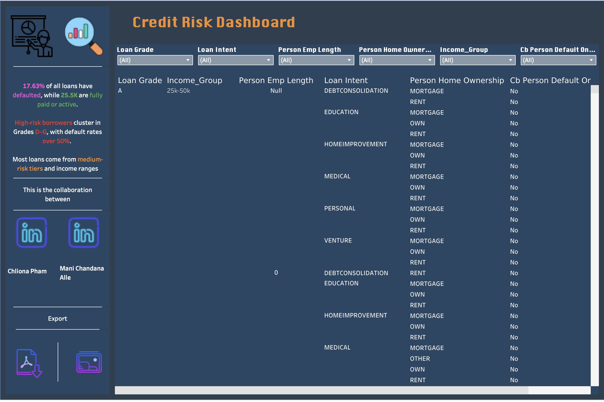
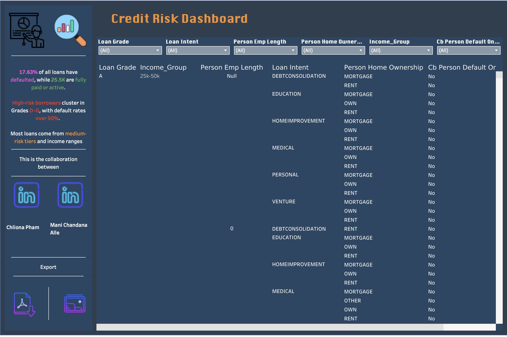

Credit Risk Dashboard
Built with Tableau and SQL
Dashboard Preview
 

This dashboard analyzes credit risk patterns using loan data. I explored borrower demographics, loan grade performance, risk tiers, and default trends to support decision-making in financial risk management.
Tools & Technologies
- Tableau Public (for data visualization)
- SQL & SQLite (for data preparation and exploration)
- Python (data cleaning)
- Icons8 + Canva (for dashboard icons and visuals)
Dashboard Highlights
- KPI Cards: Total loans, default rate, average interest rate, and data quality metrics
- Loan Status Analysis: Visual breakdown of defaulted vs. fully paid loans
- Demographics: Income groups, home ownership, and employment length
- Loan Grades vs Default Rate: Clear correlation between credit grade and default likelihood
- Risk Tier Breakdown: Distribution of low, medium, and high-risk applicants
- Loan List View: Searchable table of individual loan records with filters
Key Insights
- Default rate: 17.63% — mostly concentrated in grades D to G
- High-risk loans are often associated with lower income and missing interest rate data
- Most borrowers fall between the $25K–$75K income range
- Home renters and mortgage holders represent the largest loan volumes
Acknowledgment
Inspired by industry use cases and styled with resources from Icons8 and Tableau Community tutorials.